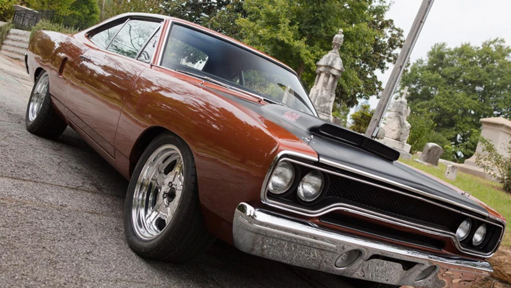
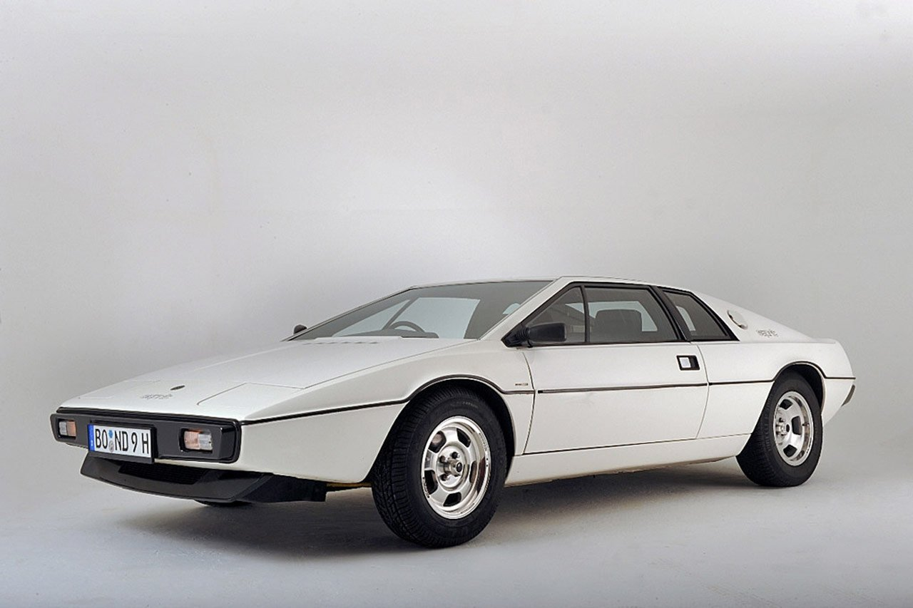
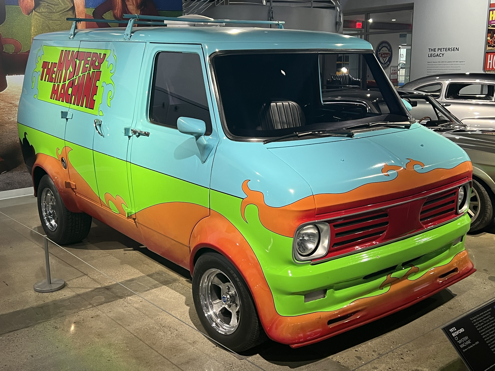
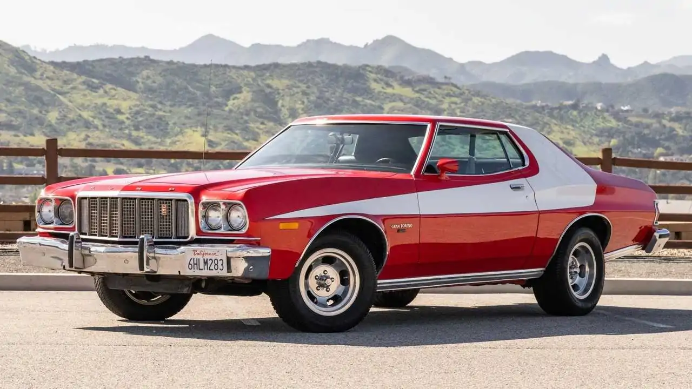

Lendas do Cinema
Alguns carros dos anos 70 não ficaram famosos apenas pelas ruas. Eles conquistaram as telonas e participaram de cenas que marcaram gerações de apaixonados por velocidade.

Plymouth Road Runner
Filme: Velozes e Furiosos
O autêntico e brutal muscle car americano purista. Equipado com motores gigantescos de bloco grande, ele dominou as pistas clandestinas do cinema com sua potência bruta e aceleração implacável, tornando-se o símbolo definitivo da velha escola de Detroit.
Ver Trecho Original ↗
Lotus Esprit S1
Filme: 007 - O Espião que me Amava (1977)
Conhecido mundialmente como "Wet Nellie", este esportivo britânico de linhas angulares quebrou todos os paradigmas do cinema de espionagem. A lenda se consolidou na famosa cena em que o carro mergulha no oceano e se transforma em um submarino totalmente funcional.
Ver Trecho Original ↗
Vauxhall Bedford CF
Filme: Scooby-Doo
A furgoneta customizada mais famosa do mundo pop. Representando a cultura de vans dos anos 70, o utilitário ganhou cores psicodélicas e o apelido de "Mystery Machine", transportando gerações de jovens detetives através de mistérios inesquecíveis.
Ver Trecho Original ↗
Ford Gran Torino
Filme: Starsky & Hutch (1975)
Com sua marcante pintura vermelha cortada pela icônica listra branca em formato de vetor, o Gran Torino esbanjava a agressividade típica dos anos 70. Ele se transformou no terceiro protagonista do seriado, realizando manobras espetaculares pelas ruas californianas.
Ver Trecho Original ↗
Ford Falcon XB GT
Filme: Mad Max (1979)
O temido "Pursuit Special" ou Interceptador V8. Este cupê australiano modificado com um supercompressor exposto no capô tornou-se o guerreiro definitivo das estradas pós-apocalípticas, representando a sobrevivência brutal e mecânica pura.
Ver Trecho Original ↗